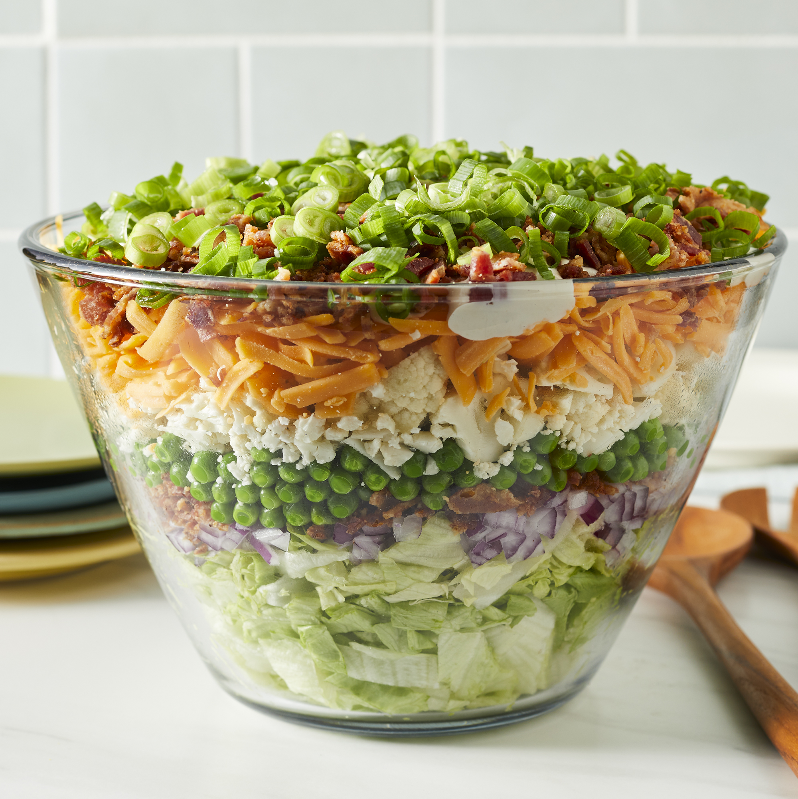

Seven Layer Salad

Description
I usually make this bacon, lettuce, onion, pea, cheese and cauliflower layered salad in a large flat bowl. There's never too much because everybody loves it! You can vary the salad by substituting green onions for red, jack cheese for the Cheddar, etc.
Ingredients
- 1 pound bacon
- 1 large head iceberg lettuce - rinsed, dried, and chopped
- 1 red onion, chopped
- 1 (10 ounce) package frozen green peas, thawed
- 10 ounces shredded Cheddar cheese
- 1 cup chopped cauliflower
- 1 ¼ cups mayonnaise
- 2 tablespoons white sugar
- ⅔ cup grated Parmesan cheese
Steps
- Place bacon in a large, deep skillet. Cook over medium high heat until evenly brown. Crumble and set aside.
- In a large flat bowl, place the chopped lettuce and top with a layer of onion, peas, shredded cheese, cauliflower and bacon.
- Prepare the dressing by whisking together the mayonnaise, sugar and Parmesan cheese. Drizzle over salad and refrigerate until chilled.